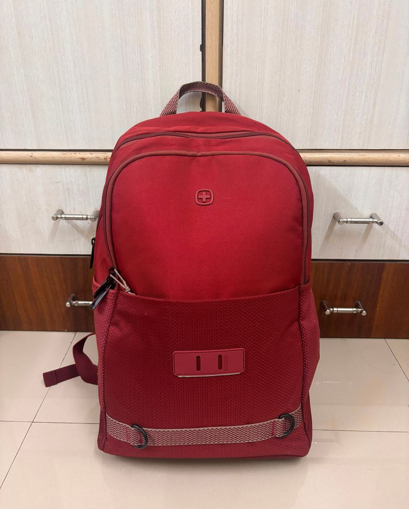
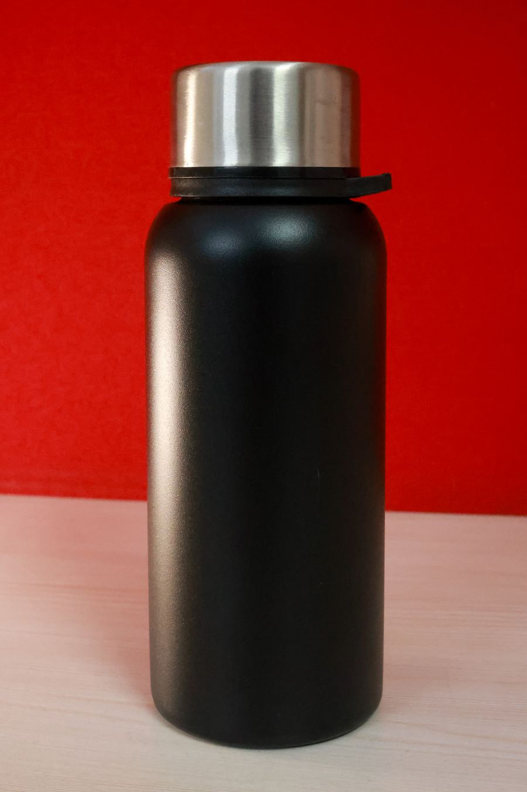

Основи мови, які видно. Кожна тема — це не стіна тексту, а віджети, які можна прокрутити кроками: змінити числа, натиснути «Крок» і подивитись, що саме відбувається в пам'яті, у коді й у виводі.
Змінна — це підписана коробка в пам'яті комп'ютера. Ти кладеш туди значення, підписуєш коробку іменем і далі звертаєшся до неї на ім'я. print дістає копію вмісту й показує на екрані, input кладе в коробку те, що набрав користувач.
натисни, щоб подивитись
Коробка з іменем
Рядок age = 15 читається справа наліво: спершу Python обчислює значення 15, потім знаходить (або створює) коробку з іменем age і кладе значення всередину. Знак = тут не «дорівнює», а «поклади в».
Далі три важливі речі, які видно в анімації нижче:
коробка з'являється в момент першого присвоєння;
нове значення витісняє старе — старе зникає безслідно;
коли ти читаєш змінну, коробка не спорожнюється: назовні йде копія.
Копія, а не переїзд
Найпоширеніше непорозуміння. Рядок b = a не зв'язує дві коробки між собою назавжди. Він лише бере копію того, що лежить в a прямо зараз, і кладе її в b. Далі коробки живуть окремо.
Як поміняти вміст двох коробок місцями
Класична задача. Якщо просто написати x = y, а потім y = x, старе значення x буде вже затерте — і воно втрачене назавжди. Потрібна третя коробка, куди можна тимчасово відкласти вміст.
Перемкни режим і подивись, що саме гине в неправильному варіанті.
Як називати коробки
Ім'я може містити літери, цифри й нижнє підкреслення, але не може починатися з цифри й не може містити пробіл чи дефіс. Регістр важливий: age і Age — дві різні коробки. І головне правило, якого немає в синтаксисі: ім'я має пояснювати, що всередині. a, b, x1 через тиждень не скаже нічого навіть тобі.
print: показати вміст
print нічого не змінює в пам'яті — він лише виводить текст на екран. Тонкощі починаються, коли значень кілька.
Кома між значеннями сама ставить пробіл. Плюс між рядками склеює їх без пробілу. sep задає роздільник, end — те, чим завершити рядок замість переходу на новий.
Що лежить у коробці: типи
Для Python важливо не лише значення, а і його тип. 5 — це число (int), а "5" у лапках — рядок (str). Виглядають на екрані однаково, поводяться зовсім по-різному: числа додаються, рядки склеюються.
Перевірити тип завжди можна командою print(type(x)). Перетворити: int("5") дає число 5, str(5) дає рядок "5", float("2.5") дає дробове число.
input: значення від користувача
Коли програма доходить до input, вона зупиняється й чекає. Курсор блимає, поки людина не набере текст і не натисне Enter. Тільки після цього набране потрапляє в коробку, і програма йде далі.
І тут головне, про що всі забувають: input завжди повертає рядок. Навіть якщо користувач набрав цифри, у коробці лежатиме "16", а не 16. Щоб рахувати, число треба перетворити через int().
Введи будь-що в поля зверху й пройди програму кроками. Потім вимкни int() і подивись, де все ламається.
Обережно:int() спрацює тільки якщо в рядку справді число. На int("шістнадцять") або int("16 років") програма впаде з помилкою ValueError.
Перевір себе
1. Що виведе програма?
x = 5
x = x + 3
print(x)
8. Спершу обчислюється права частина (5 + 3), і аж потім результат лягає в ту саму коробку, затираючи п'ятірку.
2. А тут?
a = 2
b = a
a = 10
print(b)
2. У коробку b потрапила копія двійки. Зміна a на неї вже не впливає.
3. Що покаже цей код?
a = "2"
b = "3"
print(a + b)
23, а не 5. Це рядки, і плюс для них означає склеювання.
4. Користувач вводить 10. Що станеться?
n = input("Число: ")
print(n * 2)
Виведеться 1010. input повернув рядок "10", а множення рядка на 2 повторює його двічі. Щоб отримати 20, потрібно int(input(...)).
Шпаргалка
age = 15
покласти 15 у коробку age
age = age + 1
взяти вміст, додати 1, покласти назад
print(a, b)
кома сама ставить пробіл
print("а" + "б")
склеює рядки без пробілу
print(a, b, sep="-")
свій роздільник між значеннями
print(a, end="")
не переходити на новий рядок
name = input("Ім'я: ")
текст у дужках — підказка користувачу
n = int(input())
прочитати й одразу перетворити на число
type(x)
показати тип значення
f"Мені {age} років"
вставити значення просто в рядок
Умови в Python
Програма без умов завжди робить одне й те саме. Умова — це розвилка: комп'ютер перевіряє твердження, отримує True або False і залежно від відповіді йде однією з доріг. Нижче можна покроково подивитись, як він обирає.
натисни, щоб подивитись перевірку
Умова — це вираз, який дає True або False
Перш ніж писати if, треба зрозуміти, що саме він перевіряє. У дужках чи після ключового слова стоїть вираз, який Python обчислює до одного з двох значень: True (істина) або False (хиба). Третього не дано.
Пограйся з операторами порівняння — зліва і справа можна поставити будь-які числа.
Найпоширеніша помилка.= і == — різні речі. Один знак рівності присвоює значення (x = 5), два порівнюють (x == 5). У if потрібні саме два.
Як читати блок-схему
Код показує лише текст програми, а блок-схема — усі її дороги одразу. Це стара й дуже проста мова малюнків: нею умови записували ще до появи Python, і вона й досі найшвидший спосіб пояснити розвилку на папері чи на дошці.
Фігур треба знати всього три.
Овал — початок і кінець ділянки програми.
Ромб — умова. З нього завжди виходять рівно дві стрілки: True і False. Третьої не буває.
Прямокутник — дія: щось порахувати або надрукувати.
Далі така схема стоїть під кожним прикладом і живе разом із кодом. Пройдений шлях світиться зеленим, умова, яку Python зважує саме зараз, — жовтим, а гілки, до яких він так і не дійшов, лишаються блідими й пунктирними. Схему можна й гортати: клік по будь-якій фігурі перемотає код до кадру, де вона працює.
if: одна перевірка
Найпростіша форма. Якщо умова істинна — виконується тіло з відступом. Якщо ні — Python просто перестрибує через тіло й іде далі. Ніякої помилки при цьому не буде, програма мовчки продовжить роботу.
Зміни температуру й пройди кроками обидва варіанти.
if / else: дві дороги
else ловить усі випадки, які не підійшли під умову. Разом вони гарантують, що рівно одна гілка виконається — не нуль і не дві. На схемі це видно найкраще: з ромба виходять дві стрілки, і обидві врешті приводять до того самого овалу.
elif: ланцюжок перевірок
Коли варіантів більше двох, з'являється elif (скорочення від else if). Python перевіряє умови згори вниз і зупиняється на першій істинній: виконує її тіло й повністю пропускає решту ланцюжка. Решта умов навіть не обчислюються.
Постав різні бали й простеж по схемі, які ромби Python устиг зважити, а які лишились блідими. Ланцюжок на схемі — це драбина: кожне «False» веде на сходинку нижче, а перше «True» виводить убік і одразу до кінця.
Порядок має значення. Якщо в цьому прикладі підняти score >= 60 на перше місце, то бал 95 теж підійде під нього — і учень з 95 балами отримає «задовільно». У ланцюжку умови завжди йдуть від найсуворішої до найм'якшої.
Чому не можна замінити elif на кілька if
Візуально різниця маленька, у поведінці — величезна. Ланцюжок if / elif — це одна розвилка з кількома виходами. Кілька окремих if — це кілька незалежних розвилок, і кожна перевіряється сама по собі.
Перемкни режим і подивись на вивід при 95 балах. Схема при цьому теж перебудовується: у ланцюжка гілки розходяться назавжди, а в трьох окремих if обидві дороги щоразу повертаються на спільну вертикаль — і програма йде до наступної перевірки хай там що.
and, or, not: складені умови
Умови можна поєднувати. and вимагає, щоб істинними були обидві частини. or задовольняється хоча б однією. not перевертає значення на протилежне.
Python при цьому ледачий: якщо в and ліва частина вже False, праву він навіть не дивиться — результат усе одно відомий.
Умова всередині умови
Тіло if — звичайний блок коду, тож усередині може стояти ще один if. Вкладена умова перевіряється лише тоді, коли зовнішня виявилась істинною. Якщо зовнішня хибна, весь внутрішній блок разом із його else просто не існує для програми.
Рівень відступу тут — не оформлення, а сенс: він показує, до якого саме if належить else. На схемі другий ромб стоїть уже після першого — до нього просто немає дороги в обхід.
Часто вкладеність можна розплутати за допомогою and. Замість if a: та всередині if b: пишуть if a and b:. Але якщо у внутрішнього if є власний else з окремим повідомленням — вкладеність лишається потрібною.
Перевір себе
1. Що виведе програма?
x = 10
if x > 5:
print("більше")
if x > 8:
print("набагато більше")
Обидва рядки: «більше» і «набагато більше». Це два незалежні if, тому перевіряються обидва.
2. А тут?
x = 10
if x > 5:
print("більше")
elif x > 8:
print("набагато більше")
Тільки «більше». Перша умова істинна, тому elif навіть не перевіряється — хоча 10 > 8 теж правда.
3. Яке значення буде у змінної?
a = 7
b = 3
result = a > 5 and b > 5
print(result)
False. Ліва частина істинна, права ні, а and вимагає обидві. Зверни увагу: результат порівняння можна зберігати у змінну, це звичайне значення.
4. Що не так із цим кодом?
age = 20
if age = 18:
print("Рівно 18")
Синтаксична помилка: в умові стоїть присвоєння = замість порівняння ==. Python зупиниться ще до запуску програми.
Шпаргалка
a == b
дорівнює (два знаки!)
a != b
не дорівнює
a >= b
більше або дорівнює
a and b
істинно, коли істинні обидві частини
a or b
істинно, коли істинна хоча б одна
not a
перевертає True і False
x % 2 == 0
число парне
"а" in word
чи є символ у рядку
if / elif / else
виконається рівно одна гілка
if / if / if
перевіряється кожна окремо
Цикли в Python
Комп'ютер не втомлюється. Якщо треба зробити щось 5 разів, 1000 разів або для кожного символа в рядку — ми не пишемо це руками, а просимо цикл. Нижче можна покроково подивитись, що саме відбувається всередині.
for i in range(8):
Навіщо взагалі цикл
Уяви, що треба вивести числа від 0 до 4. Без циклу це п'ять окремих рядків print. А якщо чисел тисяча? Цикл — це спосіб сказати: «ось дія, повтори її для кожного значення зі списку».
У Python найчастіше зустрічається for. Читається він майже як речення: для кожного i з набору чисел зроби ось це.
for і range: перший крок
range(5) — це не «п'ятірка», а набір чисел 0, 1, 2, 3, 4. Перше число завжди включається, останнє — ні. Це найчастіша помилка на початку.
Понатискай «Крок» і подивись, як змінна i по черзі приймає кожне значення. Числа зверху можна міняти.
Під кодом стоїть блок-схема — та сама мова малюнків, що й у темі про умови: ромб — перевірка, прямокутник — дія, овали — початок і кінець. Але з'являється дорога, якої в умовах не буває: після тіла стрілка вертає назад до того самого ромба. У коді її не видно взагалі — там просто закінчується відступ.
Спробуй сам: постав старт 2, стоп 10, крок 3. Скільки разів виконається тіло циклу? А якщо крок зробити від'ємним, а старт більшим за стоп?
Перебір списку та рядка
range — не єдине, чим можна годувати цикл. for уміє йти по будь-чому, що складається з елементів: список, рядок, множина, файл. Змінна циклу тоді зберігає не номер, а сам елемент.
while: цикл із умовою
for знає наперед, скільки буде кроків. while — ні: він повторює тіло, доки умова істинна. Перед кожним заходом усередину Python наново перевіряє умову.
Схема при цьому виходить майже така сама, як у for, — і це не збіг. Будь-який цикл влаштований однаково: одна перевірка, тіло під нею й дорога назад. Різниця лише в тому, що в while ця перевірка написана нами вручну, а в for її веде сам Python.
Обережно з нескінченністю. Якщо в тілі while забути змінити змінну, умова назавжди залишиться істинною і програма зависне. У while завжди мусить бути щось, що поступово наближає умову до False.
break і continue
Два слова, які втручаються в хід циклу. break повністю виходить із циклу. continue пропускає решту тіла й одразу переходить до наступного значення.
У коді вони відрізняються однією буквою, а на схемі — цілою дорогою. Перемкни режим: break веде стрілку від умови просто до кінця, повз усе інше, а continue — назад до перевірки, тобто на ту саму петлю, тільки раніше.
Цикл у циклі
Тут ламається більшість. Правило насправді одне: на кожен крок зовнішнього циклу внутрішній проходить весь свій шлях від початку до кінця. Не один крок — увесь шлях цілком.
Тобто i терпляче чекає, поки j перебере всі свої значення, і лише тоді змінюється. І j щоразу починається заново з нуля — він не пам'ятає, де зупинився минулого разу.
Сітка під кодом показує це наочно: рядок — це одне значення i, а клітинки в рядку — значення j. Запусти й простеж, у якому порядку вони заповнюються.
А схема поруч пояснює, чому порядок саме такий: доріг назад тут дві. Коротка вертає до внутрішньої перевірки, довга обходить усе низом і вертає до зовнішньої. Поки коротка петля не вичерпається, до довгої черга просто не дійде.
Головне число: якщо зовнішній цикл робить a кроків, а внутрішній b, тіло виконається a × b разів. Три на чотири — дванадцять. Саме тому вкладені цикли на великих даних стають повільними.
Коли внутрішній цикл залежить від зовнішнього
У режимі «трикутник» у віджеті вище внутрішній цикл написаний як range(i + 1). Довжина рядка тепер залежить від того, на якому кроці зовнішній цикл. Перемкни режим і подивись, як сітка з прямокутника перетворюється на сходинки.
Зверни увагу на останній print() — він стоїть на рівні відступу зовнішнього циклу, тому спрацьовує один раз на рядок, а не після кожної зірочки. Відступ у Python — це не краса, а зміст.
Перевір себе
1. Що виведе цей код?
for i in range(1, 4):
print(i * i)
1, 4, 9 — кожне з нового рядка. range(1, 4) дає 1, 2, 3; четвірка не входить.
2. Скільки разів виконається print?
for i in range(3):
for j in range(5):
print("*")
15 разів. 3 кроки зовнішнього × 5 кроків внутрішнього.
3. У чому різниця у виводі цих двох програм?
for i in range(3): for i in range(3):
for j in range(2): for j in range(2):
print(i, j) print(i, j)
print("---")
print("---")
Ліворуч print("---") усередині внутрішнього циклу — риска з'явиться після кожної пари, тобто 6 разів. Праворуч вона на рівні зовнішнього — 3 рази, після кожного повного проходу внутрішнього циклу.
4. Що станеться тут?
n = 5
while n > 0:
print(n)
Нескінченний цикл: n ніколи не змінюється, умова завжди True. Програма друкуватиме 5, поки її не зупинити.
Шпаргалка
range(5)
0, 1, 2, 3, 4 — стоп не входить
range(2, 6)
2, 3, 4, 5
range(0, 10, 2)
0, 2, 4, 6, 8 — третє число це крок
range(5, 0, -1)
5, 4, 3, 2, 1 — рахунок назад
for c in "мова"
по одному символу рядка
for x in [1, 2, 3]
по елементах списку
for i, x in enumerate(s)
одразу і номер, і елемент
break
вийти з циклу негайно
continue
пропустити решту тіла, взяти наступне значення
print("*", end="")
друк без переходу на новий рядок
Функції
Функція — це шматок коду, якому дали ім'я. Один раз описав, далі просто кличеш на ім'я скільки завгодно разів. Найпростіше уявляти її як чорну скриньку: усередину заходять аргументи, назовні виходить результат.
4square(n)return n * n16
square(4) повертає 16
Навіщо взагалі функції
Уяви програму, яка в п'яти різних місцях вітається з користувачем однаковими трьома рядками. П'ятнадцять рядків коду замість трьох. А тепер уяви, що привітання треба змінити — доведеться шукати всі п'ять місць і нічого не забути.
Функція вирішує обидві проблеми одразу: код лежить в одному місці, а в решті програми стоїть лише виклик. Виправив усередині — виправилось усюди.
Друга причина важливіша за економію рядків: функція ховає складність. Коли ти пишеш len("привіт"), тебе не цікавить, як саме Python рахує символи. Ти знаєш лише, що на вході рядок, а на виході число. Свої функції працюють так само.
def: як створити функцію
Функція описується інструкцією def. Після імені йдуть дужки й двокрапка, а тіло — з відступом, точно як у циклах та умовах.
Найважливіше на цьому кроці: def нічого не виконує. Він лише каже Python: «запам'ятай, що є така функція». Рядки всередині оживають тільки тоді, коли функцію викличуть — тобто напишуть її ім'я з дужками.
Понатискай «Крок» і простеж, у якому порядку виконуються рядки. Зверни увагу, як виконання стрибає вниз до виклику, потім повертається вгору в тіло — і так щоразу.
Ім'я без дужок — це не виклик.hello — це сама функція як значення, її можна покласти в змінну. hello() — це наказ виконати її. Забуті дужки — класична помилка: програма мовчить, ніби нічого й не було.
Аргументи й параметри
Функція без входу вміє лише одне й те саме. Щоб вона працювала з різними даними, у дужках пишуть параметри — імена, під якими всередині лежатимуть отримані значення.
Два слова, які плутають майже всі:
Параметр — ім'я в дужках при оголошенні: def greet(name):
Аргумент — значення в дужках при виклику: greet("Оля")
Під час виклику аргумент присвоюється параметру, ніби всередині функції виконався рядок name = "Оля". І щойно функція закінчиться, це ім'я зникає.
Спробуй сам: перемкни на два параметри й подивись у блоці внизу, як значення розподіляються по місцях. Порядок має значення: перший аргумент іде в перший параметр, другий — у другий.
return: функція, яка щось віддає
print усередині функції показує текст на екрані — і на цьому все. Такий результат неможливо додати, порівняти чи покласти в змінну. Щоб функція віддала значення в програму, потрібен return.
return робить дві речі одночасно: він негайно завершує функцію й підставляє значення на місце виклику. Тобто вираз square(4) після повернення перетворюється просто на 16, і далі з ним можна робити що завгодно.
Перемкни режим у віджеті й порівняй: ліворуч у коді змінюється лише одне слово, а поведінка програми — повністю.
None — значення «нічого»
Якщо функція завершилась без return, вона все одно щось повертає — спеціальне значення None. Python мовчки дописує return None в кінець будь-якої функції, де його немає.
None — це не нуль, не порожній рядок і не False. Це єдине значення типу NoneType, яке означає «тут немає значення». Саме тому x = print("Привіт") кладе в x не текст, а None: print малює на екрані, але нічого не віддає.
Типова пастка.result = my_list.sort() дасть None, бо sort() сортує список на місці й нічого не повертає. Якщо десь несподівано з'явився None — майже завжди це функція без return.
Іменовані аргументи: sep і end
Зазвичай аргументи розпізнаються за позицією. Але є й другий спосіб — назвати аргумент прямо у виклику: print("Привіт", end=""). Такі аргументи майже завжди необов'язкові: у них є типове значення, і пишуть їх лише тоді, коли треба відхилитись від звичної поведінки.
У print таких аргументів два. sep — чим склеювати значення між собою (типово пробіл). end — що поставити в кінці (типово перехід на новий рядок).
Стек викликів
Коли одна функція викликає іншу, а та — ще одну, Python має якось пам'ятати дорогу назад. Для цього він веде стек викликів: на кожен виклик кладеться згори кадр із запам'ятованим місцем повернення й локальними змінними.
Стек — це стос тарілок. Нову кладемо зверху, беремо теж лише зверху. Функція завершилась — її кадр знімається, і виконання повертається рівно туди, звідки прийшло.
У віджеті нижче праворуч видно сам стос. Простеж, як він росте вглиб і як стискається назад.
Звідки береться «RecursionError». Якщо функція викликає сама себе без умови зупинки, кадри кладуться на стек нескінченно, поки не скінчиться відведене місце. Python зупиняє це приблизно на тисячному кадрі й повідомляє про переповнення стека.
Локальна й глобальна області видимості
Змінні, створені всередині функції, живуть у її локальній області. Вони народжуються при виклику й зникають, коли функція завершується. Змінні поза всіма функціями живуть у глобальній області й доступні всюди.
Із цього випливають чотири правила:
глобальний код не бачить локальних змінних;
одна функція не бачить локальних змінних іншої функції;
функція може читати глобальні змінні;
в різних областях можуть жити різні змінні з однаковим іменем — це не конфлікт, це просто дві різні коробки.
Останнє правило й породжує більшість плутанини. Перемикай режими у віджеті й дивись на дві панелі внизу: ліворуч глобальна область, праворуч — локальна, яка з'являється й зникає разом із викликом.
Навіщо взагалі це розділення
Ізоляція — це і є головна цінність функції. Якщо код усередині може зіпсувати лише свої змінні, то помилка залишається всередині коробки. Коли шукаєш баг, коло підозрюваних звужується з усієї програми до одного невеликого тіла функції.
global: коли треба змінити глобальну змінну
Присвоєння всередині функції завжди створює локальну змінну — навіть якщо зовні є глобальна з таким самим іменем. Щоб сказати «ні, я маю на увазі саме ту, зовнішню», на початку функції пишуть global ім'я.
Як Python вирішує, локальна змінна чи глобальна:
оголошена поза всіма функціями → глобальна;
у функції є global x → глобальна;
у функції їй щось присвоюють → локальна;
у функції її лише читають → глобальна.
UnboundLocalError виникає, коли в одній функції змінну спершу читають, а нижче їй присвоюють. Python дивиться на все тіло заздалегідь: побачив присвоєння — значить, змінна локальна на всій довжині функції. І в момент читання вона ще порожня. Перемкни віджет у третій режим, щоб побачити це покроково.
Користуватись global варто рідко. Коли глобальну змінну міняють кілька функцій, стає майже неможливо зрозуміти, хто саме зіпсував значення. Надійніше передати значення аргументом і забрати назад через return.
try та except: коли щось іде не так
Помилка під час виконання зупиняє програму повністю. Але часто помилка очікувана: користувач ввів букви замість числа, файлу немає, дільник виявився нулем. Такі випадки перехоплюють конструкцією try / except.
У try кладуть код, який може впасти. У except — що робити, якщо він таки впав. Якщо помилки не було, блок except просто пропускається.
Важлива деталь: після спрацювання except програма не зупиняється, а спокійно йде далі з наступного рядка.
Чому важливо називати тип помилки.except ZeroDivisionError ловить лише ділення на нуль. Голий except: ловить геть усе — включно з твоїми ж описками в іменах змінних, які після цього тихо зникнуть замість того, щоб чесно впасти.
5.0, потім нуль, потім кінець. Помилка перехоплена, тож програма не падає й доходить до останнього рядка.
Шпаргалка
def f():
оголошення функції — тіло поки не виконується
f()
виклик: саме тут тіло й запрацює
def f(a, b):
a і b — параметри
f(2, 3)
2 і 3 — аргументи, стають значеннями a і b
return x
віддати значення й негайно вийти з функції
return
просто вийти; поверне None
None
«немає значення»; тип NoneType
print(a, b, sep="-")
чим склеювати аргументи між собою
print(a, end="")
без переходу на новий рядок
global x
у цій функції x — глобальна змінна
try: / except E:
перехопити помилку типу E й не впасти
Колекції
Одна змінна тримає одне значення. Але даних майже завжди більше: список покупок, оцінки класу, набір унікальних тегів. Для цього в Python є колекції — контейнери, які тримають багато значень одразу. Основних три: список, словник і множина. Вони відрізняються одним питанням — як ти шукаєш елемент усередині.
Три способи тримати багато значень
Уяви, що ти записав імена всіх, хто прийшов на гурток: "Оля", "Іван", "Оля", "Ніна". Ті самі дані можна покласти в три різні контейнери — і кожен відповість на своє питання.
Список["Оля", "Іван", "Оля", "Ніна"] — зберігає порядок і повтори. Шукаєш за номером позиції: names[0].
Словник{"Оля": 2, "Іван": 1, "Ніна": 1} — зберігає пари «ключ → значення». Шукаєш за ключем: counts["Оля"].
Множина{"Оля", "Іван", "Ніна"} — зберігає лише різні значення, без порядку. Питаєш тільки одне: "Оля" in names.
Перемикай контейнер у віджеті нижче й дивись, що станеться з тими самими чотирма іменами.
Чим вони відрізняються
Таблиця коротко відповідає на всі питання, які виникають, коли ти обираєш контейнер.
список (list)
словник (dict)
множина (set)
Запис
[1, 2, 3]
{"a": 1}
{1, 2, 3}
Порожній
[]
{}
set()
Пошук за
номером позиції a[2]
ключем d["Оля"]
тільки x in s
Порядок
зберігається
у порядку додавання
не гарантований
Повтори
дозволені
ключі унікальні
неможливі
Швидкість in
повільно: перебирає все
миттєво (за ключем)
миттєво
Коли брати
потрібен порядок і повтори
потрібна підпис-мітка до значення
потрібні лише різні значення
Є ще кортеж (tuple). Це той самий список, але незмінний: point = (3, 5). Його не можна ані доповнити, ані переписати — і саме тому кортеж можна класти в ключі словника й в елементи множини, а список — ні.
Як обрати контейнер
На практиці вибір зводиться до двох питань. Натисни відповіді — і подивись, що вийде.
Спільне для всіх трьох
Хоч контейнери й різні, кілька речей працюють однаково скрізь:
len(x) — скільки елементів усередині;
for e in x: — перебрати все по черзі (у словнику це будуть ключі);
x in y — чи є таке значення (у словнику — чи є такий ключ);
перетворення одне в одне: list(s), set(a), dict(pairs);
вбудовані функції sorted, sum, min, max, map, filter приймають будь-яку з трьох колекцій.
Саме про ці вбудовані функції — розділ Advanced на кожній з трьох під-сторінок.
Куди далі
Кожен контейнер розібраний окремо: спершу основи, потім розділ Advanced з вбудованими функціями та їх покроковою візуалізацією.
Список — це ряд пронумерованих комірок під одним іменем. Ти кладеш у нього скільки завгодно значень, і кожне отримує свій номер — індекс. Порядок зберігається рівно такий, у якому ти елементи поклав, а однакові значення можуть траплятись скільки завгодно разів.
натисни, щоб подивитись пошук за індексом
Пронумеровані комірки
Список записують у квадратних дужках, елементи розділяють комами: nums = [10, 20, 30, 40]. Порожній список — це [].
Усередині лежать не самі значення поруч, а пронумеровані комірки. Нумерація починається з нуля — це найчастіша причина помилок у новачків: у списку з чотирьох елементів найбільший індекс дорівнює 3, а не 4.
Є ще від’ємні індекси: -1 — останній елемент, -2 — передостанній. Дуже зручно, коли довжина списку заздалегідь невідома.
Спробуй різні індекси, зокрема ті, яких немає.
IndexError. Якщо індекса не існує, програма не поверне порожнечу — вона впаде на цьому рядку. Перед зверненням за індексом, який рахувався в програмі, варто перевірити if i < len(nums).
Зрізи: шматок списку
Зріз nums[1:3] повертає новий список із елементів від індексу 1 до індексу 3, причому 3 не входить. Це те саме правило «до, але не включно», що й у range.
Будь-яку межу можна не писати: nums[:3] — від початку, nums[2:] — до кінця, nums[:] — увесь список (і це, до речі, спосіб зробити копію). Третє число — крок: nums[::2] бере кожен другий, а nums[::-1] перевертає список.
Покрути межі й подивись, які комірки потрапляють у зріз.
Список можна змінювати
На відміну від рядка чи числа, список змінюваний: його не треба створювати заново, щоб щось додати чи прибрати. Основні дії:
nums.append(50) — додати в кінець;
nums.insert(1, 15) — вставити на позицію, решта зсувається вправо;
nums.remove(30) — прибрати перше входження значення;
nums.pop() — зняти останній елемент і повернути його;
nums[0] = 99 — переписати комірку на місці.
Зверни увагу на індекси після кожної дії: вони перераховуються.
Копія чи те саме?
Ось місце, де списки поводяться зовсім не так, як числа. Рядок b = a для числа зробив би копію. Для списку — ні: обидва імені починають вказувати на той самий список. Змінив через одне ім’я — змінилось і «в другому», бо він той самий.
Щоб отримати справжню копію, треба сказати про це явно: b = a[:], b = list(a) або b = a.copy().
Advanced: вбудовані функціїadvanced
Навіщо це, якщо є цикл
Усе, що робить sorted, map чи filter, можна написати звичайним for з append. Різниця в тому, що вбудована функція каже що ти хочеш отримати, а цикл — як саме це зробити. Перше читається за секунду, друге треба розбирати рядок за рядком.
У кожному віджеті нижче поруч показано, що відбувається всередині — щоб «магії» не лишилось.
sorted() і .sort(): упорядкувати
Дві дуже схожі речі з важливою різницею. sorted(nums)повертає новий відсортований список, а сам nums лишає недоторканим. nums.sort() сортує на місці й повертає None — тому x = nums.sort() це класична помилка: у x опиниться None.
Два аргументи роблять сортування по-справжньому корисним:
reverse=True — від більшого до меншого;
key= — функція, яка каже, за чим порівнювати. sorted(words, key=len) сортує за довжиною слова, а не за алфавітом.
Перемикай режим і дивись, як міняється результат.
Ключ — це не значення, а мірка.key=len не замінює слова на числа: Python лише вимірює кожне слово, порівнює мірки, а переставляє самі слова. У результаті лежать ті самі рядки, просто в іншому порядку.
map(): те саме перетворення для кожного
map(f, nums) читається як «застосуй f до кожного елемента». Функція проходить список зліва направо, кожне значення прогонить через f і складає результати в новому порядку — один до одного, довжина не змінюється.
Один нюанс: map повертає не список, а «ліниву» послідовність — вона порахує значення тільки тоді, коли їх у неї попросять. Тому результат зазвичай одразу загортають: list(map(str, nums)).
Найчастіший практичний випадок.input() дає рядок. Щоб перетворити «3 7 12» на список чисел, пишуть nums = list(map(int, input().split())): split() ріже рядок на шматки, map(int, …) робить із кожного шматка число.
filter(): залишити тільки потрібні
filter(f, nums) — це сито. Функція f має відповідати на кожен елемент True або False; ті, на яких вийшло True, проходять далі, решта відсіюється. Порядок тих, хто пройшов, зберігається, а довжина результату зазвичай менша за початкову.
Різницю з map легко запам’ятати: map міняє елементи, filter міняє їх кількість.
Списковий вираз: map і filter в одному рядку
На практиці замість map і filter частіше пишуть списковий вираз (list comprehension). Це та сама робота, але одним рядком і без слова lambda:
[x * 2 for x in nums] — те саме, що map;
[x for x in nums if x > 10] — те саме, що filter;
[x * 2 for x in nums if x > 10] — обидві дії одразу.
Читати такий рядок треба з середини: спершу for, потім if, і тільки в кінці — що саме кладемо в результат.
sum, min, max, len: одне число зі списку
Ця четвірка згортає весь список в одне значення. sum додає, min і max шукають найменше й найбільше, len рахує елементи. Усередині це звичайний цикл із накопичувачем — саме його й показує віджет.
min і max теж розуміють key=: max(words, key=len) поверне найдовше слово, а не найбільше за алфавітом.
Порожній список.sum([]) спокійно дасть 0, а от max([]) впаде з ValueError. Якщо список може бути порожнім, або перевіряй if nums:, або задавай запасне значення: max(nums, default=0).
any і all: одна відповідь True/False
Ці дві функції відповідають на питання про весь список одразу. any(...) — «чи є хоч один, для якого правда?», all(...) — «чи для всіх правда?».
Головна їхня риса — ліниве обчислення: обидві зупиняються, щойно відповідь стає очевидною. any обриває роботу на першому True, all — на першому False. Решту елементів вони навіть не дивляться.
enumerate і zip: індекс поруч і два списки разом
Дві функції, які прибирають найнеприємніші конструкції з циклів.
enumerate(nums) віддає пару «номер, значення» — і більше не треба тримати окремий лічильник чи писати for i in range(len(nums)). Нумерацію можна почати не з нуля: enumerate(nums, 1).
zip(a, b) зшиває два списки в пари: перший з першим, другий з другим. Якщо довжини різні, zip мовчки зупиняється на коротшому — це варто пам’ятати.
Разом вони працюють особливо добре.dict(zip(names, ages)) одним рухом збирає словник із двох списків, а for i, (n, a) in enumerate(zip(names, ages)) дає одразу номер, ім’я і вік.
Перевір себе
1. Що виведе програма?
nums = [10, 20, 30]
print(nums[-1] + nums[0])
40. nums[-1] — це останній елемент, тобто 30, а nums[0] — перший, тобто 10.
2. А тут?
a = [1, 2, 3]
b = a
b.append(4)
print(len(a))
4. b = a не створює копії — обидва імені вказують на той самий список. Щоб a лишився з трьох елементів, треба було написати b = a[:].
3. Що лежить у x?
nums = [3, 1, 2]
x = nums.sort()
print(x)
None. Метод .sort() сортує список на місці й нічого не повертає. Відсортований список лежить у самому nums. Якщо потрібен новий список — x = sorted(nums).
4. Скільки елементів у результаті?
nums = [1, 2, 3, 4, 5, 6]
res = [x * 10 for x in nums if x % 2 == 0]
print(res)
[20, 40, 60] — три елементи. Спершу працює if (лишаються 2, 4, 6), і тільки те, що пройшло, множиться на 10.
5. Що виведе цей рядок?
print(list(zip([1, 2, 3], ["a", "b"])))
[(1, 'a'), (2, 'b')]. zip зупиняється на коротшому списку, тому трійка лишається без пари й просто зникає — без жодної помилки.
Шпаргалка
a = []
порожній список
a[0] a[-1]
перший і останній елемент
a[1:3] a[:3] a[::-1]
зріз: шматок, від початку, навпаки
a.append(x) a.insert(i, x)
додати в кінець / вставити на позицію
a.remove(x) a.pop()
прибрати значення / зняти останній і повернути
len(a) x in a
довжина / чи є таке значення
a.index(x) a.count(x)
номер першого входження / скільки разів
b = a[:] b = list(a)
справжня копія (а не b = a)
sorted(a) a.sort()
новий відсортований / посортувати на місці
sorted(a, key=len, reverse=True)
за мірою, від більшого
list(map(int, a))
перетворити кожен елемент
list(filter(None, a))
лишити тільки «правдиві» елементи
[x * 2 for x in a if x > 0]
списковий вираз: map + filter
sum(a) min(a) max(a)
сума, найменше, найбільше
any(a) all(a)
хоч один / усі
enumerate(a) zip(a, b)
номер + значення / пари з двох списків
a + b a * 3
склеїти списки / повторити
"-".join(words)
зібрати список рядків в один рядок
Далі: практика
Теорії досить — час написати кілька функцій самому. На сторінці практики на тебе чекає магазин, у якому не працюють сортування, фільтри й статистика. Кожна функція, яку ти допишеш, вмикає одну з цих частин.
Перед тобою інтернет-магазин, у якому майже нічого не працює: каталог не сортується, товари не фільтруються, а статистика показує прочерки. Не працює ні кнопка «Показати ще», ні історія переглядів. Усе це тримається на десяти маленьких функціях для роботи зі списками. Напиши їх — і магазин оживе просто на твоїх очах.
Виконано 0 з 10
Як це працює
1Пишеш функцію
У кожного завдання є заготовка. Прибери рядок raise NotImplementedError(...) і напиши свою реалізацію.
2Запускаєш тести
Кнопка ▶ Запустити або Ctrl+Enter. Праворуч з'явиться таблиця: що мало вийти і що вийшло насправді.
3Магазин оживає
Щойно функція написана, магазин одразу нею користується. Код зберігається в цьому браузері автоматично.
Усе виконує справжній Python, який працює прямо в браузері, — нічого встановлювати не треба. Одна важлива деталь: товари в магазині — це складні записи з назвою, ціною, категорією й фото, але твої функції їх не бачать. Магазин сам розбирає товари на прості списки, наприклад [1899, 3499, 2299, …] для цін, і передає у функцію саме такий список. Тож кожне завдання — про звичайний список чисел або рядків.
Обережно з while. Якщо цикл ніколи не закінчиться, вкладка зависне. Тоді просто перезавантаж сторінку: код збережеться, а завислу функцію сторінка сама вже не запускатиме, поки ти не натиснеш «Запустити».
Магазин
Це і є вітрина. Поки завдання не розв'язані, під фільтрами з'являються підказки, що саме ще не працює. Посилання в них ведуть до потрібного завдання.
PyShopКаталогНовинкиДоставкаКонтактиКошик0
Завантажуємо Python у браузер… Уперше це може зайняти кілька секунд.
новий сезон
Усе для навчання, спорту й дому


Ви нещодавно переглядали
1. len(): скільки товарів знайдено
Почнемо з найпростішого. Над каталогом є картка «товарів знайдено» — їй потрібна кількість елементів у списку цін. Функція get_length отримує список items і має повернути, скільки в ньому елементів.
Рахувати циклом не треба: у Python для цього є вбудована функція. Зверни увагу на другий тест — порожній список теж має довжину.
2. min(): найдешевший товар
Картка «мінімальна ціна» чекає на get_min: поверни найменший елемент списку. Від'ємні числа й дробові ціни на кшталт 449.0 теж мають працювати.
3. max(): найдорожчий товар
Дзеркальне завдання: get_max повертає найбільший елемент списку. Коли зробиш його, увімкни фільтр за категорією чи ціною й подивись, як міняється максимальна ціна.
Порожній список. Якщо фільтри не залишили жодного товару, min([]) і max([]) падають з ValueError. Магазин це витримає й покаже прочерк, але у своїх програмах про такий випадок варто пам'ятати.
4. sum() / len(): середня ціна
get_average повертає середнє арифметичне: суму всіх чисел, поділену на їхню кількість. Обидві частини цієї формули — вбудовані функції, які ти вже знаєш.
Ділення через / у Python завжди дає дробове число, тому для [2, 4, 6] вийде саме 4.0, а не 4.
5. sorted(): сортування каталогу
Тепер оживимо список «Сортування». sort_values отримує список цін чи назв і повертає новий відсортований список. Параметр reverse=True означає «від більшого до меншого».
Тут легко помилитись. Магазин знає, яка ціна якому товару належить, лише поки вхідний список не змінився. Тому items після виклику має лишитися таким, як був: згадай, чим sorted(items) відрізняється від items.sort(). Останній тест ловить саме цю помилку.
6. for + append: фільтр за категорією
Кнопки категорій працюють через filter_by_category. Вона отримує список categories, де categories[i] — категорія i-го товару, і повертає список індексів тих товарів, чия категорія дорівнює target.
Готової функції тут немає, тож знадобиться цикл: заведи порожній список, пройдись по categories і через append додавай індекс кожного потрібного елемента. enumerate дає індекс і значення одразу.
7. for + append: фільтр за ціною
Останнє завдання — поля «ціна від / до». filter_by_price_range повертає індекси всіх цін, для яких low <= prices[i] <= high. Обидві межі входять у діапазон.
Цикл той самий, що й у попередньому завданні, змінюється лише умова. У Python її можна записати ланцюжком — саме так, як у формулі вище.
8. Зрізи: перші n товарів
Справжні магазини не показують увесь каталог одразу. Наш спершу показує 8 товарів, а кнопка «Показати ще» під ними щоразу додає ще 4. Для цього потрібна first_n: вона повертає перші n елементів списку.
Згадай зріз з теми «Списки»: nums[:2] — це перші два елементи. Ліву межу можна не писати, тоді зріз починається з початку списку. Лишилося поставити n замість двійки.
Якщо елементів менше, ніж n, зріз не падає з помилкою — просто віддає всі, що є.
9. Зрізи з кінця: останні переглянуті
Під каталогом є блок «Ви нещодавно переглядали». Магазин записує кожен відкритий товар у кінець списку, а показати треба лише 4 останні. last_n повертає останні n елементів.
Від'ємний індекс рахує з кінця, і в зрізі це теж працює: nums[-2:] — два останні елементи. Праву межу не пишемо, тоді зріз іде до самого кінця.
Щоб перевірити в магазині, клацни на фото або назву кількох товарів.
10. Зріз навпаки: найновіші першими
Останні перегляди стоять у порядку «від старого до нового», а на сайтах щойно відкритий товар показують першим. reverse_items повертає список задом наперед.
Для цього є короткий зріз: nums[::-1]. Обидві межі порожні, а -1 — це крок: іти з кінця до початку. Зріз завжди створює новий список, тож сам items не зміниться — останній тест саме це й перевіряє.
Що ми використали
len(items)
кількість елементів
min(items) max(items)
найменший / найбільший елемент
sum(items) / len(items)
середнє арифметичне
sorted(items, reverse=True)
новий відсортований список, оригінал не змінюється
items.sort()
сортує на місці й повертає None
for i, x in enumerate(items):
індекс і значення разом
result.append(i)
додати елемент у кінець нового списку
low <= x <= high
ланцюжок порівнянь: x у діапазоні
items[:n]
перші n елементів
items[-n:]
останні n елементів
items[::-1]
новий список у зворотному порядку
Словники
Список пам’ятає порядок: перший, другий, третій. Але часто нам треба інше — знайти значення за іменем, а не за номером. Для цього є словник: пара «ключ → значення», де ключ ти придумуєш сам.
натисни, щоб подивитись пошук за ключем
Чому не завжди вистачає списку
Уяви, що треба зберігати вік кількох людей. У списку [16, 15, 17] числа є, а от чиї вони — невідомо. Доводиться тримати другий список з іменами й стежити, щоб порядок у двох списках ніколи не роз’їхався.
Словник прибирає цю проблему: значення лежить одразу під своїм іменем. ages["Оля"] читається майже як речення — «вік Олі».
Головна різниця в тому, за чим ти шукаєш. У списку — за номером позиції, і номер треба звідкись знати. У словнику — за ключем, який ти сам і придумав.
Ключ і значення
Словник записують у фігурних дужках, пари розділяють комами, а всередині пари ключ від значення відділяє двокрапка: {"Оля": 16, "Іван": 15}. Порожній словник — це просто {}.
Новий ключ додається присвоєнням: ages["Ніна"] = 14. Але якщо такий ключ уже є, нової пари не з’явиться — старе значення просто заміниться новим. Ключ у словнику завжди один.
Порівняй зі змінними. Словник поводиться так само, як коробка з іменем: перше присвоєння створює, друге — витісняє старе значення. Різниця лише в тому, що імена тут не вписані в код, а лежать усередині даних, і їх можна створювати на ходу.
Як дістати значення
Найкоротший спосіб — квадратні дужки: ages["Оля"]. У нього є одна неприємна риса: якщо такого ключа немає, програма не поверне порожнечу, а впаде з помилкою KeyError.
Коли ти не впевнений, що ключ існує, безпечніше взяти .get(). Він повертає None замість помилки, а другим аргументом можна задати своє значення за замовчуванням: ages.get("Ніна", 0).
Спробуй ім’я, якого немає в словнику, і перемкни спосіб доступу.
Перевірка без діставання. Оператор in для словника дивиться саме ключі, а не значення: "Оля" in ages дасть True, а 16 in ages — False, навіть якщо шістнадцятка там лежить.
Перебір словника
Словник теж можна пройти циклом, але важливо розуміти, що саме опиниться в змінній циклу. Звичайний for k in ages дає ключі. Щоб отримати значення, потрібен .values(), а щоб мати одразу обидва — .items() і дві змінні циклу.
Що можна класти в ключі
Ключем словника може бути не будь-що. Правило коротке: значення має бути незмінним. Число, рядок, True, кортеж — можна. Список, словник чи множина — ні, бо їх можна змінити вже після того, як вони стали ключем.
Спроба взяти список за ключ обірветься помилкою TypeError: unhashable type. Натисни на будь-яке значення й подивись на вердикт.
Advanced: вбудовані функціїadvanced
Словник як джерело даних
Майже всі вбудовані функції — sorted, sum, max, map, filter — працюють зі словником. Питання лише в тому, що саме ти їм даси: самі ключі (d), самі значення (d.values()) чи пари (d.items()). Помилка на цьому кроці — найчастіша причина дивних результатів.
keys, values, items: три погляди на словник
Ці три методи не копіюють словник — вони дають на нього вікна. d.keys() показує ключі, d.values() — значення, d.items() — пари у вигляді кортежів ("Оля", 16).
Саме ці вікна ти передаєш далі: sum(d.values()), sorted(d.items()), list(d.keys()). Подивись, що саме опиняється всередині кожного.
Сортування словника
Словник сам по собі не сортується — сортують те, що з нього дістали. Тому результат sorted — це завжди список, а не словник.
Цікаве починається з key=. Щоб посортувати пари за значенням, треба сказати, що мірка — це друга частина пари: sorted(d.items(), key=lambda p: p[1]). Читається як «бери пару p і порівнюй за p[1]».
Якщо результат знову потрібен словником, його загортають: dict(sorted(...)) — з Python 3.7 словник зберігає порядок додавання, тому такий «відсортований словник» справді працює.
max, min, sum над словником
Класичне питання: «хто найстарший?». Наївне max(ages) дасть не те, чого ти чекаєш — воно порівняє ключі як рядки й поверне того, хто останній за алфавітом.
Правильно — сказати, за чим міряти: max(ages, key=ages.get) перебирає ключі, для кожного питає його значення й повертає ключ-переможець. Або max(ages.values()), якщо потрібне саме число.
Підрахунок: найкорисніший патерн
Порахувати, скільки разів трапляється кожне значення — те, заради чого словник беруть найчастіше. Уся конструкція тримається на .get(x, 0): «візьми поточний лічильник, а якщо ключа ще немає — вважай, що нуль».
Той самий результат дає готовий інструмент зі стандартної бібліотеки: from collections import Counter, далі Counter(letters). Але спершу варто побачити, як це працює всередині.
Словниковий вираз
Такий самий скорочений запис, як списковий вираз, тільки у фігурних дужках і з двокрапкою: {k: v * 2 for k, v in d.items()}. Ним зручно перетворювати значення, фільтрувати пари або міняти ключі й значення місцями.
А ще словник легко зібрати з двох списків: dict(zip(names, ages)).
Об’єднати два словники. З Python 3.9 це одна дія: merged = a | b. Якщо ключ є в обох, виграє той, що правіше. Старший спосіб — a.update(b), але він змінює a на місці, а не створює новий словник.
Перевір себе
1. Що виведе програма?
d = {"a": 1, "b": 2}
d["a"] = 5
print(len(d))
2. Ключ "a" уже існував, тому нова пара не додалась — лише замінилось значення. У словнику як було дві пари, так і лишилось.
2. Чим відрізняється поведінка цих двох рядків, якщо ключа "x" немає?
print(d["x"])
print(d.get("x"))
Перший рядок обірве програму помилкою KeyError — усе, що після нього, не виконається. Другий спокійно надрукує None і програма піде далі.
3. Що виведе цей цикл?
ages = {"Оля": 16, "Іван": 15}
for x in ages:
print(x)
Імена: Оля і Іван. Простий for по словнику йде по ключах. Щоб отримати числа, потрібен ages.values().
Перший рядок дасть Оля — це найбільший ключ за алфавітом, вік тут узагалі не враховувався. Другий дасть Ніна, бо мірка задана як ages.get, тобто саме вік.
5. Що буде в res?
d = {"a": 1, "b": 2, "c": 3}
res = {k: v for k, v in d.items() if v > 1}
print(res)
{'b': 2, 'c': 3}. Словниковий вираз пройшов усі пари й лишив ті, де значення більше за одиницю.
Шпаргалка
d = {}
порожній словник
d = {"Оля": 16}
ключ : значення через двокрапку
d["Ніна"] = 14
додати пару або замінити наявну
d["Оля"]
дістати значення, KeyError якщо немає
d.get("Оля", 0)
дістати або взяти запасне значення
"Оля" in d
чи є такий ключ
del d["Оля"] d.pop("Оля", None)
прибрати пару
d.keys() d.values() d.items()
ключі / значення / пари
for k, v in d.items()
одразу ключ і значення
len(d) sum(d.values())
скільки пар / сума значень
max(d, key=d.get)
ключ із найбільшим значенням
sorted(d.items(), key=lambda p: p[1])
пари, посортовані за значенням
{k: v * 2 for k, v in d.items()}
словниковий вираз
d[x] = d.get(x, 0) + 1
підрахунок частот
dict(zip(names, ages))
словник із двох списків
a | b a.update(b)
об’єднати словники
Множини
Множина — це набір, у якому кожне значення трапляється рівно один раз. Вона не пам’ятає порядку й не вміє шукати за номером. Натомість вона робить дві речі краще за всіх: миттєво відповідає на питання «чи є тут таке?» і одним оператором порівнює два набори між собою.
натисни, щоб подивитись
Набір без повторів
Множина схожа на список, але має два принципові правила: однакових елементів у ній не буває і порядок не гарантований. Записується вона теж у фігурних дужках, але без двокрапок: {"к", "о", "д"}. Порожню множину створюють через set() — бо {} уже зайняте словником.
Якщо додати елемент, який там уже є, множина мовчки нічого не зробить. Помилки не буде — просто нічого не зміниться.
Найчастіше застосування: прибрати повтори зі списку одним рухом — set(names). А якщо потрібен саме список, результат повертають назад: list(set(names)). Порядок після цього буде вже інший.
Операції над множинами
Тут множини роблять те, чого списки не вміють коротко. Три оператори відповідають на три звичні питання: хто є хоча б в одному наборі, хто є в обох одразу, а хто є лише в першому.
Перемикай операцію й дивись, як змінюється результат.
Що можна класти в множину. Правило те саме, що для ключів словника: елемент має бути незмінним. Число, рядок, кортеж — можна. Список чи інша множина — ні: TypeError: unhashable type. Для «множини всередині множини» існує frozenset — незмінна версія множини.
Advanced: вбудовані функціїadvanced
Оператор чи метод
Кожна операція над множинами має два записи: короткий оператор (a | b) і метод із назвою (a.union(b)). Роблять вони те саме, але з однією різницею: метод приймає будь-яку колекцію — список, кортеж, — а оператор вимагає, щоб праворуч теж була множина.
Методи замість операторів
Чотири основні операції та їхні імена:
a | b = a.union(b) — об’єднання, усі елементи разом;
a & b = a.intersection(b) — переріз, тільки спільні;
a - b = a.difference(b) — різниця, є в a, немає в b;
a ^ b = a.symmetric_difference(b) — симетрична різниця: є рівно в одному з двох.
Остання — та, про яку найчастіше забувають, хоча саме вона відповідає на питання «що змінилось між двома наборами».
Підмножини: чи вміщається один набір в інший
a <= b (або a.issubset(b)) питає: «чи всі елементи a є всередині b?». Дзеркальне a >= b (a.issuperset(b)) — навпаки. А a.isdisjoint(b) перевіряє, що спільного немає взагалі нічого.
Це коротка заміна циклу з all(...): замість all(x in b for x in a) пишеться один знак.
Чому in у множині миттєвий
Ось головна причина, чому множини існують поруч зі списками. Щоб перевірити x in nums у списку, Python мусить пройти елементи один за одним, поки не знайде потрібний. У списку на мільйон елементів це мільйон порівнянь.
Множина влаштована інакше: вона рахує з елемента число (хеш) і за ним одразу знає комірку, де той елемент має лежати. Скільки б елементів не було, перевірка коштує один крок.
Тому коли ти багато разів перевіряєш «чи є тут таке», список варто один раз перетворити на множину — і далі питати вже в неї.
Множинний вираз і прибирання повторів
Фігурні дужки без двокрапки дають множинний вираз: {x * 2 for x in nums}. Він працює як списковий, але результат — множина, тож повтори зникнуть самі.
Для прибирання повторів є три звичні способи, і різниця між ними — у порядку:
set(names) — найшвидше, але порядок втрачається;
sorted(set(names)) — без повторів і за алфавітом;
list(dict.fromkeys(names)) — без повторів, але порядок першої появи зберігається.
Множина змінювана — і тому не хешується. Її можна доповнювати (s.add, s.update) і чистити (s.discard — тихо, s.remove — з помилкою, якщо елемента немає). Саме через змінюваність множину не можна покласти ані в ключ словника, ані в іншу множину — там потрібен frozenset.
Перевір себе
1. Що виведе програма?
s = {1, 2, 2, 3, 3, 3}
print(len(s))
3. Множина зберігає кожне значення один раз, скільки б разів воно не траплялось у записі.
2. Що поверне кожен вираз?
a = {1, 2, 3}
b = {3, 4}
print(a & b)
print(a ^ b)
{3} — переріз, спільний елемент один. Потім {1, 2, 4} — симетрична різниця: усе, що є рівно в одній із множин.
3. Чому цей рядок падає?
s = {[1, 2], 3}
TypeError: unhashable type: 'list'. Список змінюваний, тому не може бути елементом множини. Замість нього годиться кортеж: {(1, 2), 3}.
4. Який із двох варіантів збереже порядок імен?
names = ["Оля", "Іван", "Оля", "Ніна"]
a = list(set(names))
b = list(dict.fromkeys(names))
Другий. set порядку не тримає взагалі, а dict.fromkeys робить словник із ключами й зберігає порядок першої появи: ['Оля', 'Іван', 'Ніна'].
Шпаргалка
s = set()
порожня множина (не {} !)
s = {1, 2, 3}
множина з елементами
s.add(x)
додати; повтор просто ігнорується
s.discard(x) s.remove(x)
прибрати тихо / з KeyError, якщо немає
x in s
чи є елемент — миттєво
len(s)
скільки різних елементів
a | b a.union(b)
об’єднання
a & b a.intersection(b)
переріз
a - b a.difference(b)
різниця
a ^ b a.symmetric_difference(b)
є рівно в одній із двох
a <= b a.issubset(b)
чи вміщається a в b
a.isdisjoint(b)
чи немає нічого спільного
{x * 2 for x in nums}
множинний вираз
set(names)
прибрати повтори (порядок втрачається)
list(dict.fromkeys(names))
прибрати повтори, порядок зберегти
frozenset({1, 2})
незмінна множина: годиться в ключі
Самостійні роботи
Підсумкові перевірки для кожного класу. Одна спроба, у кожного учня свій набір завдань, результат — одразу після завершення, разом із посиланням, яке можна надіслати вчителю.